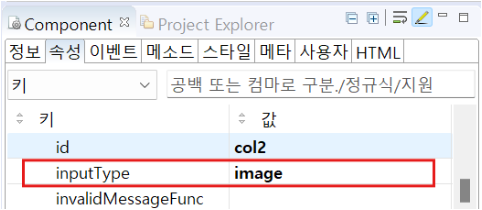

dataURL을 이용하여 이미지 Blob(Binary Large Object) 데이터를 컬럼에 표현하는 예제입니다. Blob 데이터를 dataURL로 변환하면, 이를 HTML 요소에 직접 삽입하여 이미지로 표시할 수 있게 됩니다.
이미지 Blob 데이터를 dataURL 형식으로 저장하여 컬럼에 표현
1
STEP 1: 초기 상태를 확인합니다.
Blob 데이터가 이미지로 표시됩니다.
Image 1.브라우저(Chrome) 실행 예시
1
STEP 1: gridColumn의 inputType을 'image'로 설정
inputType을 'image'로 변경하는 것은 gridColumn에서 데이터를 표현할 때만 설정합니다. (STEP 1) gridColumn 뿐만 아니라, 'Image' 컴포넌트에서도 Blob 데이터를 image로 표현할 수 있습니다. (STEP 2)
Image 2.웹스퀘어 스튜디오의 Component View - 속성 설정 예시

2
STEP 2: dataURL 형식으로 변환한 Blob데이터를 연결된 데이터리스트에 세팅
Blob 데이터를 dataURL 형식으로 변환하여 JSON 데이터 객체를 생성합니다.
이미지 데이터를 설정할 때는 반드시 데이터 값 앞에 'data:image/png;base64,'라는 문자열을 추가해야 합니다.
즉, 최종적으로는 "column": "data:image/png;base64,[Blob 데이터]"의 형태로 데이터 값을 설정합니다.
생성된 데이터 객체를 'setJSON' 메소드를 사용하여 연결된 dataList에 저장합니다.
세부 스크립트는 아래의 예시에 작성되어 있습니다.Example 1.Script - Blob 데이터를 dataURL 형식으로 변환하여 저장하기
// 예제 파일에서는 스크립트 'scwin.onpageload'에 작성되어 있습니다. // 팝업 생성 옵션 var jsonData = [ { "col1" : "" , "col2" : "data:image/png;base64,/9j/4AAQSkZJRgABAQAAAQABAAD... (이하 생략)" } ]; dataList1.setJSON(jsonData);
setJSON